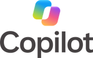

Iedereen heeft AI.Maar weinigen halen er echt iets uit.
Praktische opleidingen voor elke medewerker, elk team en je directie, op basis van jullie eigen werk en in de tools die je al gebruikt.
Bij jou ter plaatse of online, voor jouw organisatie.
Wat deelnemers leren herkennen, live tijdens de opleiding.
Vijf manieren om het te leren.
Elke opleiding vertrekt van echte taken uit je organisatie. Beide opleidingen voor iedereen bestaan ook als besloten sessie voor één directieteam.
AI Foundations
Hoe AI werkt, waar het misloopt, wat er nooit in mag, en hoe je het gebruikt in je eigen tool.
Twee halve dagen→ Voor iedereenThinking with AI
Betere beslissingen met AI, geen snellere fouten. Geoefend op je eigen beslissingen.
Eén dag→ Voor teamsAI for your role
Eén team, zijn echte werk: waar AI helpt, waar niet, en wie wat controleert.
Een halve tot een hele dag→ Voor teamsAI Build Day
Een hackathon op je eigen problemen: werkende prototypes zonder code, elk met een eigenaar.
Eén dag→ Voor de organisatieAI Champions Programme
We leiden enkele van je mensen op om de basis zelf te geven, en zien hen daarna een half jaar lang elke maand.
Twee dagen, daarna zes maanden→ Om bij te blijven na de opleidingFrontier Watch →Blijf mee met wat verandert, elke maand.
Geen opleiding over AI. Een opleiding in je eigen werk.
Alles gebeurt op jouw taken, in jouw tools, volgens jouw regels.
Je eigen taken
Vooraf verzameld, zodat niets theoretisch blijft.
Je eigen tool
Claude, Microsoft Copilot of ChatGPT; Codex, Cursor of Claude Code voor engineeringteams.
Je eigen regels
Wat er nooit in mag, en wie wat controleert.
Elk kwartaal bijgewerkt
Het lesmateriaal evolueert mee met de tools, zodat het nooit verouderd raakt.

- Codex